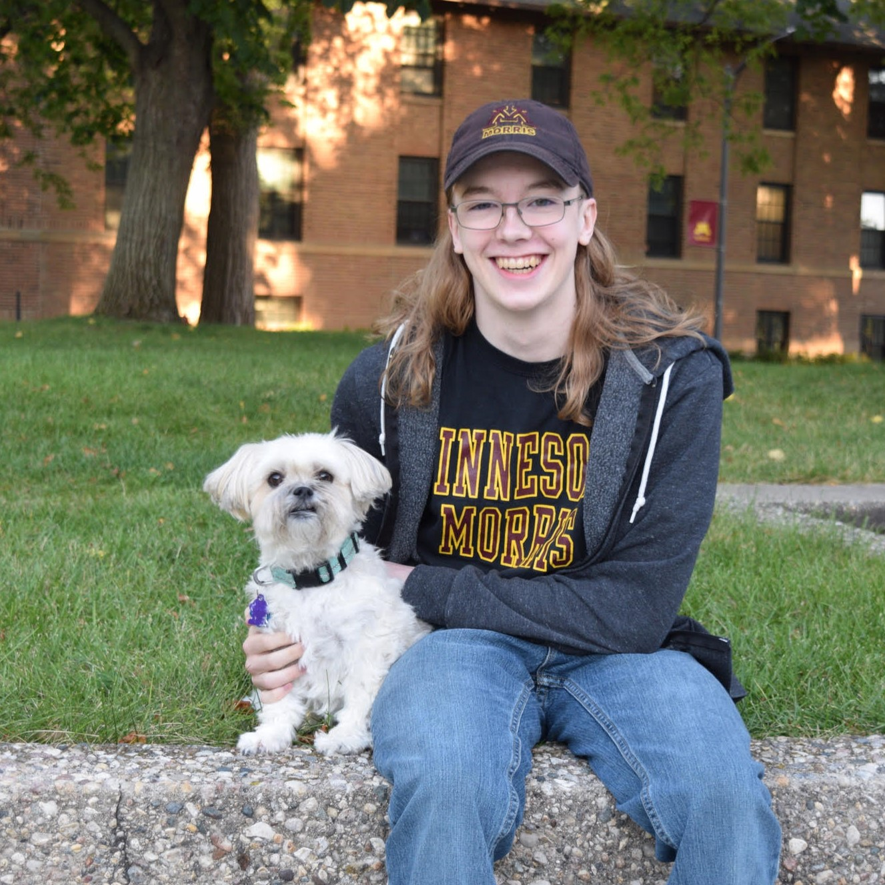

Welcome.

I am a mathematician, a programmer, a thinking person, and an enthusiast of art and science. I write. I read. I make games. I love poetry, and puzzles, and music, and ants. My best friend is an eleven-year-old Maltese-Pekingese mix who possesses an infectious vivacity and an unbridled eagerness to participate in every moment of my life. I am habitually quiet, often deep in thought. I strive every day to remain hopeful while realistic, sensible while ambitious, effectual while contemplative, and hesitant while curious. My pronouns are he/him and I live in Morris, Minnesota.
In December of 2025, I graduated from the University of Minnesota Morris with a bachelor's in mathematics and a computer science minor. During my years at UMM (a liberal arts institution), I took courses on a wide variety of topics, including a number of honors courses: examples include economics, art history, Don Quixote, chemistry, and creativity. I worked as a tutor for six semesters, helping students with math at many levels—from basic algebra to real analysis—as well as other topics I had studied, chiefly statistics, physics, computer science, and Latin.
I am presently working on multiple research projects, both of which are on their way to becoming papers: one in game theory with my former advisor Dr. David Roberts, and another with Dr. Lisa Bevevino which takes a data-driven approach to analyzing Old Occitan poetry. Each of these projects involves an interactive website which can be found here. Much of my academic work, as well as my creative work, is markedly multidisciplinary. I take pride in my ability to connect different ways of thought, and to communicate ideas to people who think differently from me.